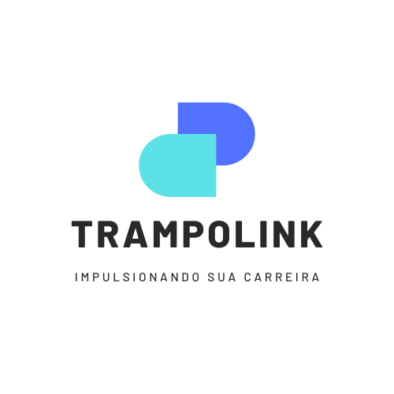
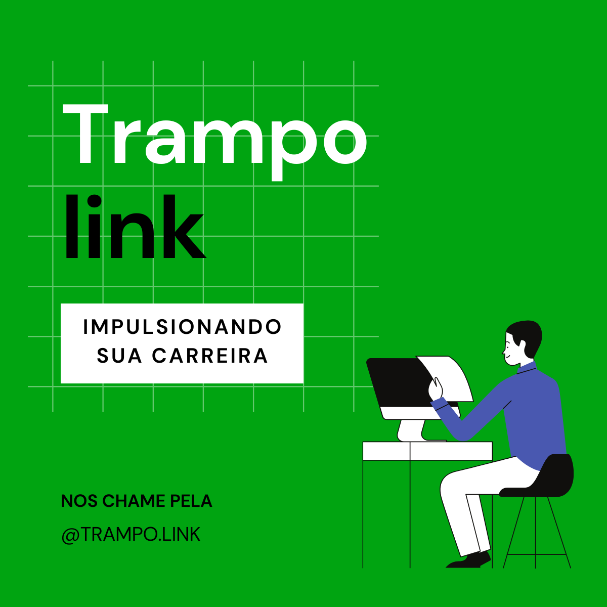
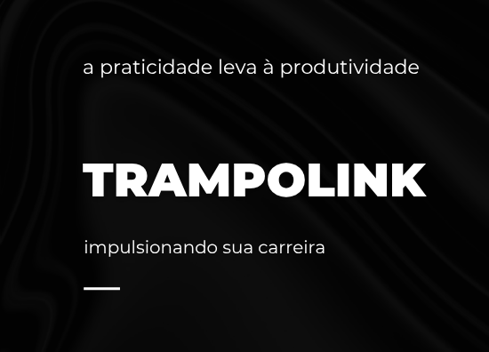

O Trampolink foi um projeto de empreendedorismo social desenvolvido em 2023 durante minha participação em uma competição brasileira de empreendedorismo promovida pelo Colégio Marista São Luís. O desafio consistia em criar uma empresa capaz de contribuir para os Objetivos de Desenvolvimento Sustentável (ODS) da ONU por meio de uma solução inovadora de impacto social.
Nossa proposta foi alinhada ao ODS 8 — Trabalho Decente e Crescimento Econômico, buscando ampliar o acesso a oportunidades profissionais para pessoas em situação de vulnerabilidade social.



Em muitas comunidades, o acesso a oportunidades de trabalho é limitado pela falta de conexão entre trabalhadores e empregadores, especialmente quando se trata de empregos formais. Essa realidade dificulta a inserção de diversas pessoas no mercado de trabalho e contribui para a manutenção de desigualdades econômicas.
Para enfrentar esse desafio, nossa equipe desenvolveu o Trampolink, uma plataforma digital projetada para conectar pessoas desempregadas ou em busca de novas oportunidades profissionais a possíveis vagas de trabalho de forma simples, acessível e inclusiva. A proposta priorizava regiões com menor acesso a plataformas tradicionais de recrutamento, aproximando trabalhadores e oportunidades por meio de uma interface intuitiva e de fácil utilização.
O projeto foi desenvolvido por uma equipe de seis integrantes, na qual atuei tanto na coordenação do grupo quanto na construção da identidade visual da iniciativa.
O nome "Trampolink" surgiu da união entre as palavras "trampolim" e "link". O termo "trampolim" representa crescimento e impulsionamento profissional, enquanto "link" faz referência às conexões estabelecidas entre trabalhadores e oportunidades, inspirado em plataformas profissionais amplamente utilizadas no mercado.
Ao final do desenvolvimento, o projeto foi apresentado para uma banca avaliadora e submetido à Olimpíada Brasileira de Empreendedorismo (OBE), proporcionando uma experiência prática de apresentação de soluções, comunicação de ideias e defesa de propostas inovadoras.
AprendizadosO Trampolink representou meu primeiro contato com o universo do empreendedorismo, da inovação social e da criação de produtos digitais. Durante o projeto, desenvolvi habilidades de liderança, trabalho em equipe, comunicação, design de interfaces e construção de identidade visual, além de compreender como a tecnologia pode ser utilizada para gerar impacto positivo na sociedade.